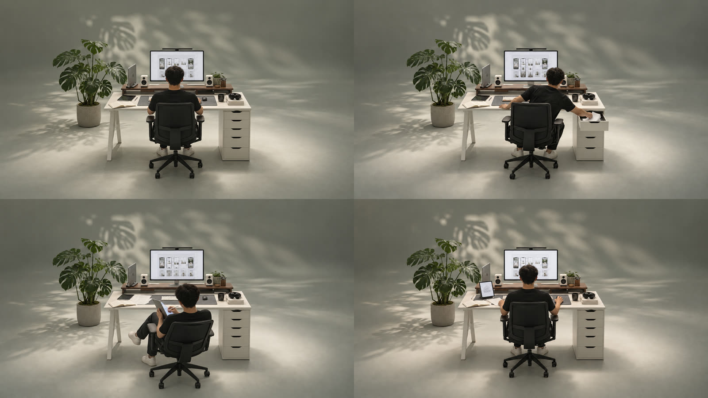

( Abhishek Mankotia )
An independent product designer & engineer crafting interfaces, motion and code, from first sketch to shipped product
An independent product designer & engineer crafting interfaces, motion and code, from first sketch to shipped product
The hero of this site: a WebGL shader that sets a studio film in live ASCII type, scroll choreographed down to a glyph by glyph exit.

A 60 second film concept: one designer, one room, one day, and a monstera's shadow on a concrete wall as the only clock.

An "agent is building this" animation drawn from any element's own structure: a dot field, a probe line, traced outlines, then a scan line reveal.

A one screen portfolio: a bio column beside a GPU stage, with the whole page taking each project's colour as it plays.

Four keyframes and the prompts behind an AI studio film, shot from behind at a desk and cut to loop under this site's hero.